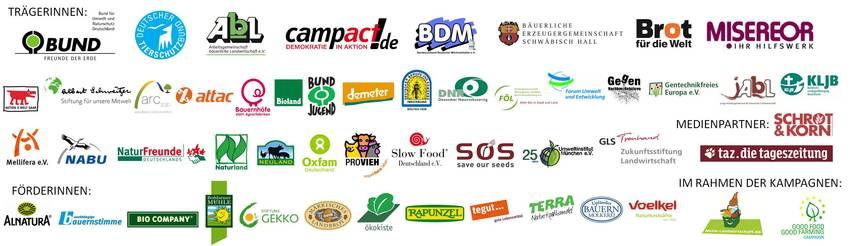
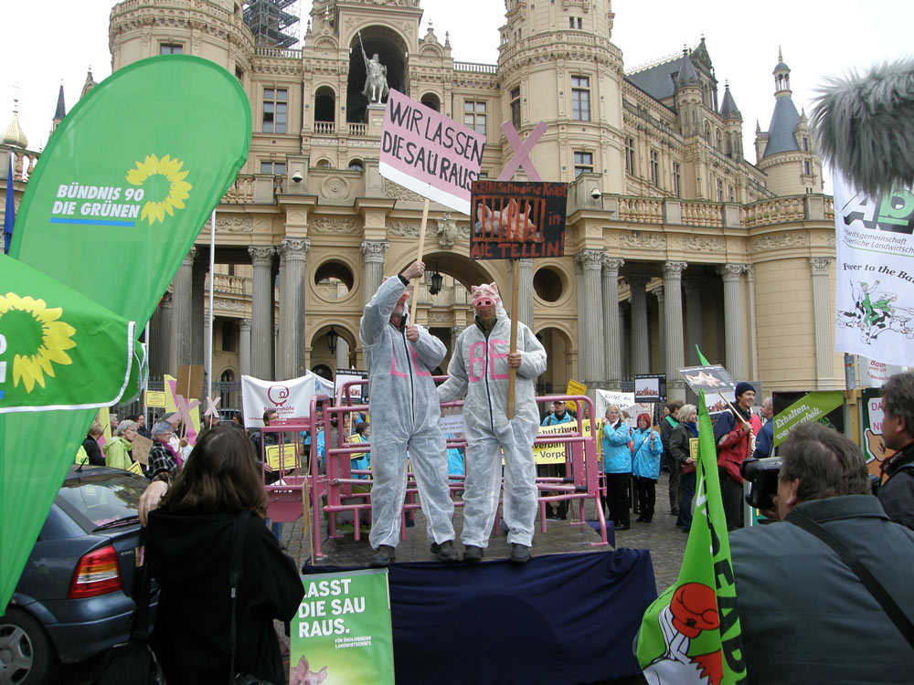

Solange die Politik dieses bürgerschaftliche Engagement totschweigt, verlacht oder bekämpft,
wird ihre Handlungsunfähigkeit vor dem Diktat der Agrarlobby weiter wachsen.
Also, wenn der hier vorgesehene Masterplan für unser Land eine wirkliche Bedeutung haben soll,
muß die dafür zuständige Politik dieses bürgerschaftliche Engagement anerkennen.
Nur in einem gemeinsamen Zusammenspiel von Einwohnern und Regierung kann die Agrarwende für alle Beteiligten friedlicher verlaufen.
[Anhang: <!-- ia0 -->Kasten-gross.jpg<!-- ia0 -->]
Die nächste Gelegenheit zur Positionierung gegenüber der Agrarindustrie ist auf der "Grünen Woche".
Dort heißt es: WIR HABEN AGRARINDUSTRIE SATT.
Die Zahl potentieller Partner wird immer größer:
[Anhang: <!-- ia1 -->1a1dd39ea01.jpg<!-- ia1 -->]
Hier soll sich auch der Masterplan zu seinem Ganzen fügen.

